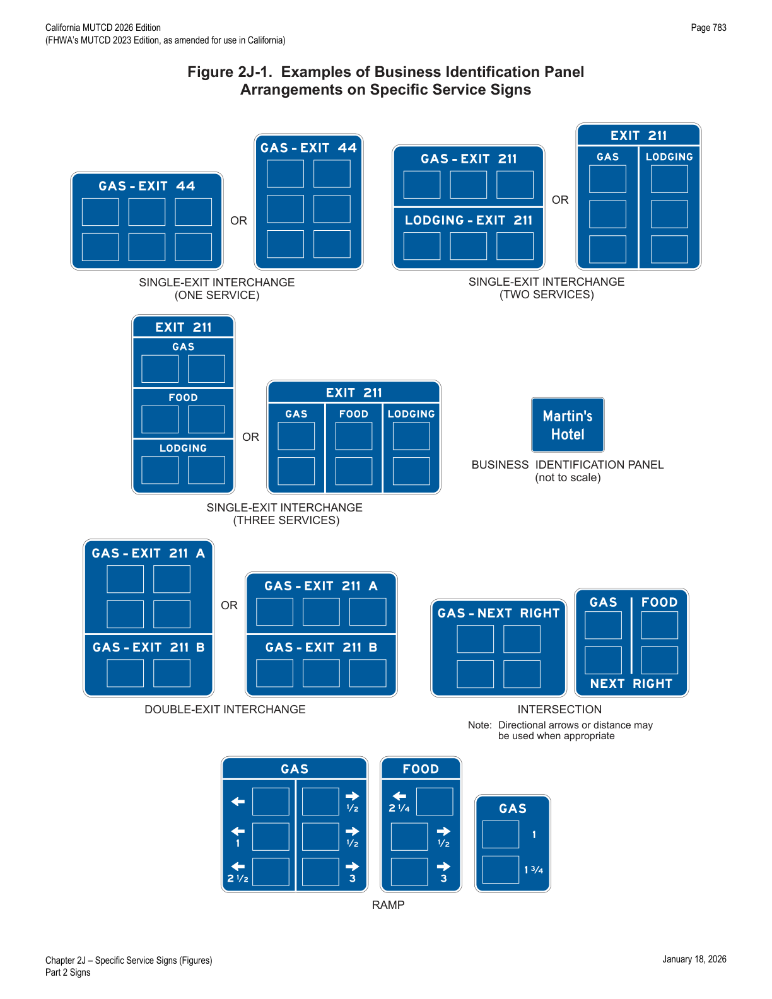
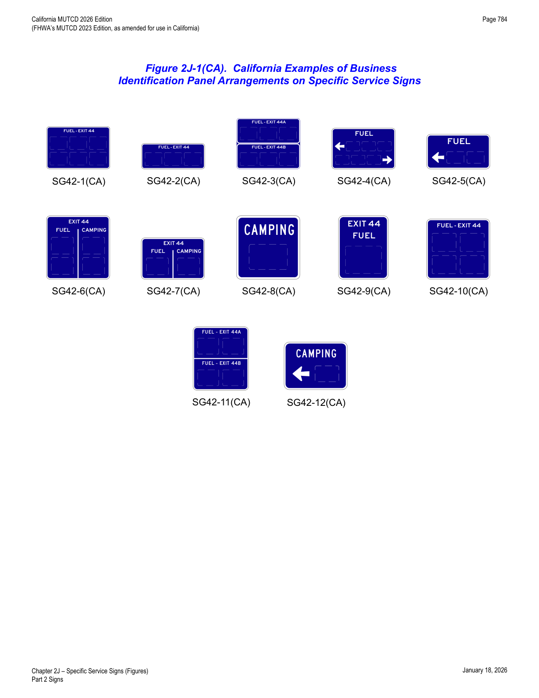
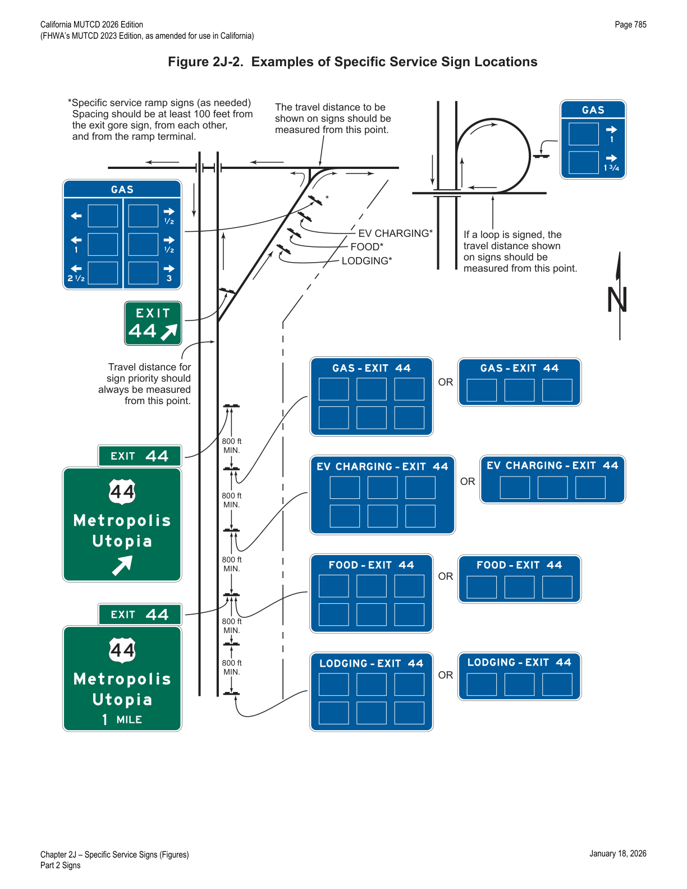
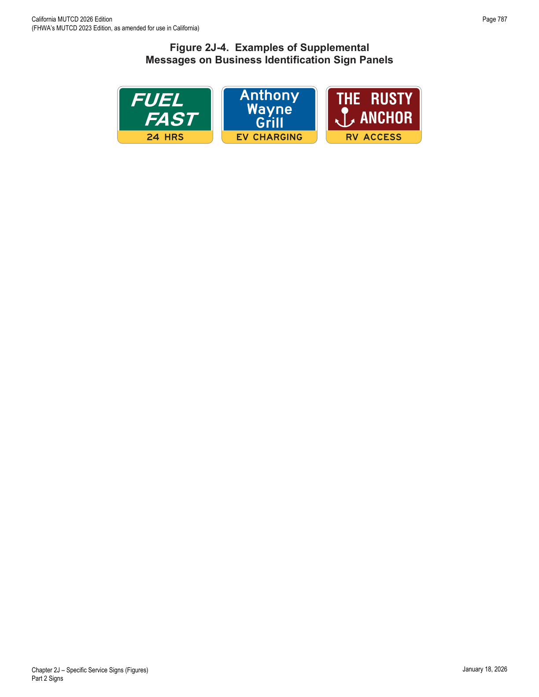
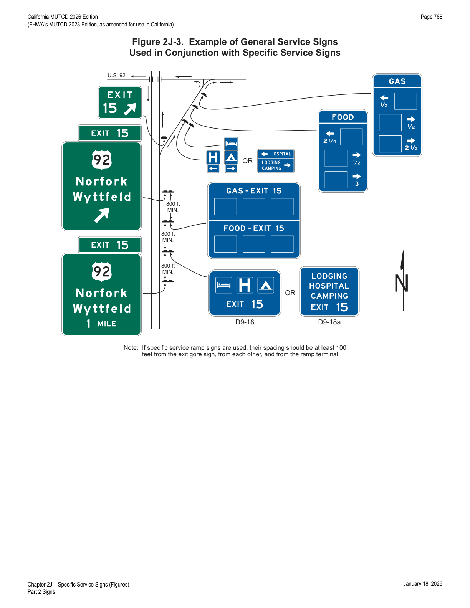
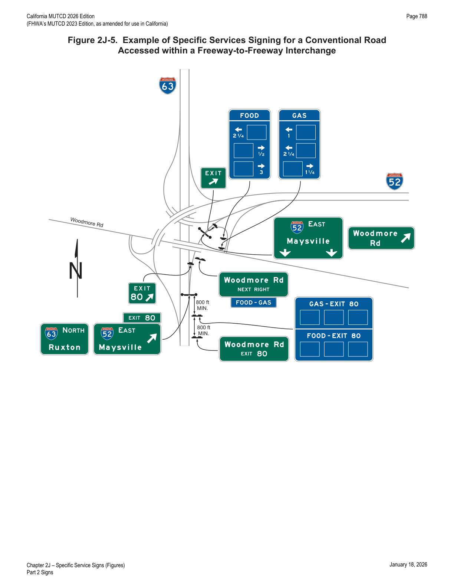
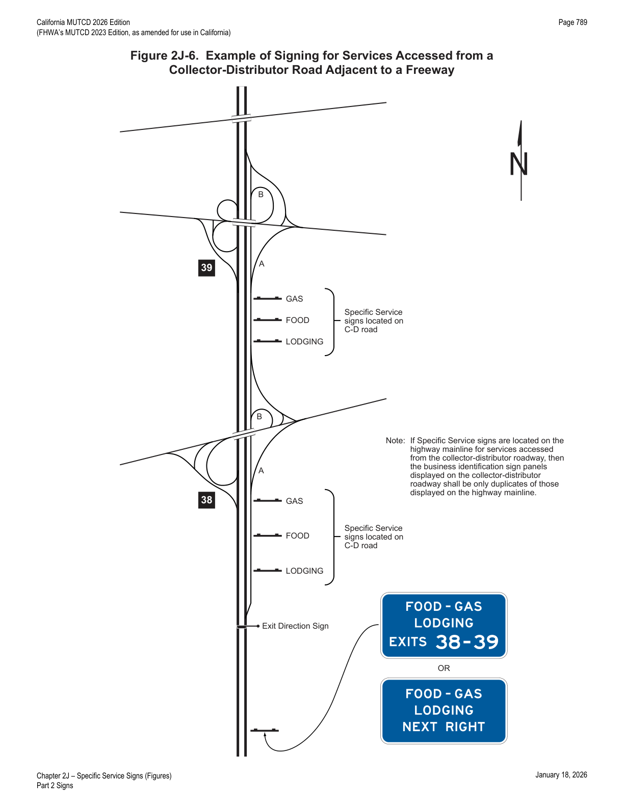
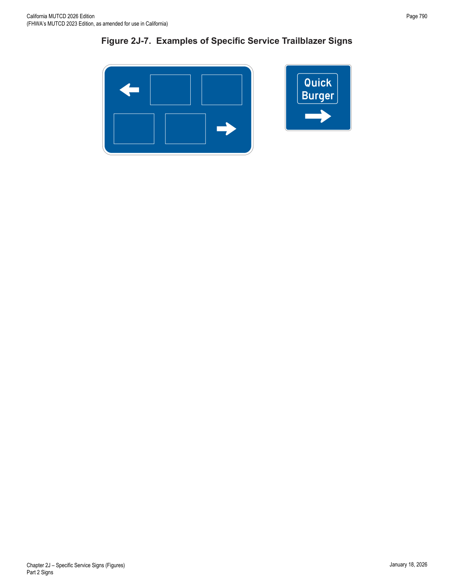

Part 2 · Signs · Chapter 2J
Specific Service Signs
Governs the "Logo Sign" program — blue guide signs displaying business identification (logo) sign panels for eligible gas/fuel, food, lodging, camping, attraction, and EV charging businesses at rural interchanges and intersections.
2J.01Eligibility
Standard — Mandatory Requirement
- 01Specific Service signs shall be defined as guide signs that provide road users with business identification and directional information for eligible services. Eligible service categories shall be limited to gas fuel, food, lodging, camping, attractions, and electric vehicle (EV) charging.
Support — Background/Explanatory
- 01aIn California, the generic term FUEL is used for GAS.
Standard — Mandatory Requirement
- 02The use of Specific Service signs shall be limited to areas primarily rural in character with adequate space for all signs to be properly accommodated. Refer to SHC, Division 1, Chapter 1, Article 3, § 101.7.
Support — Background/Explanatory
- 03When services at an interchange are abundant, this is an indication that the character of the area is no longer primarily rural and General Service signs would be more appropriate.
Option — Permissive
- 04Where an engineering study determines a need, Specific Service signs may be used on any class of highway, including freeways, expressways, and conventional roads.
- 04aSHC, Division 1, Chapter 1, Article 3, § 101.7 includes the use of specific service signs for freeways only.
Standard — Mandatory Requirement
- 05Specific Service signs shall not be installed at an interchange where the road user cannot conveniently reenter the freeway or expressway and continue in the same direction of travel.
Support — Background/Explanatory
- 05aRefer to CCR, Title 21, Division 2, Chapter 19, § 2108(d).
Standard — Mandatory Requirement
- 06Eligible service facilities shall comply with laws concerning the provisions of public accommodations without regard to race, religion, color, age, sex, or national origin, and laws concerning the licensing and approval of service facilities.
- 07The attraction services shall include only facilities that have the primary purpose of providing amusement, historical, cultural, or leisure activities to the public.
Guidance — Recommended Practice
- 08Except as provided in Paragraph 9 of this Section, distances to eligible services should not exceed 3 miles in any direction.
Support — Background/Explanatory
- 08aRefer to CCR, Title 21, Division 2, Chapter 19, § 2111 for distances to eligible services.
Option — Permissive
- 09If, within the 3-mile limit, facilities for the services being considered are not available or choose not to participate in the program, the limit of eligibility may be extended in 3-mile increments until one or more facilities for the services being considered chooses to participate, or until 15 miles is reached, whichever comes first.
Standard — Mandatory Requirement
- 10If State or local agencies elect to provide Specific Service signing, there shall be a statewide policy for such signing and criteria for the eligibility and availability of the various types of services.
- 10aRefer to SHC, Division 1, Chapter 1, Article 3, § 101.7 and CCR, Title 21, Division 2, Chapter 19, §§ 2100 through 2120 for detailed policies on specific service signs.
Guidance — Recommended Practice
- 11The criteria for the statewide policy should consider the following:
A. To qualify for a GAS FUEL business identification sign panel, a business should have: (1) vehicle services including gasoline, oil, and water; (2) continuous operation at least 16 hours per day, 7 days per week for freeways and expressways, and at least 12 hours per day, 7 days per week for conventional roads; and (3) modern sanitary facilities and drinking water.
B. To qualify for a FOOD business identification sign panel, a business should have: (1) licensing or approval, where required; (2) continuous operations to serve at least 2 meals per day, at least 6 days per week; and (3) modern sanitary facilities.
C. To qualify for a LODGING business identification sign panel, a business should have: (1) licensing or approval, where required; (2) adequate sleeping accommodations; and (3) modern sanitary facilities.
D. To qualify for a CAMPING business identification sign panel, a business should have: (1) licensing or approval, where required; (2) adequate parking accommodations; and (3) modern sanitary facilities and drinking water.
E. To qualify for an ATTRACTION business identification sign panel, a facility should have: (1) regional significance, in compliance with Paragraph 7 of this Section; and (2) adequate parking accommodations.
Standard — Mandatory Requirement
- 12To be eligible for an Electric Vehicle (EV) CHARGING business identification sign panel, the EV chargers provided shall meet the criteria for Direct Current Fast Chargers provided in 23 CFR 680.106 and be in continuous operation at least 16 hours per day, 7 days per week.
Option — Permissive
- 13Business identification sign panels for a proprietary electric vehicle charging service may be included on an EV Charging Specific Service sign if it meets the eligibility criteria in Paragraph 12 of this Section and the criteria found in the CCR.
Support — Background/Explanatory
- 14Section 2J.12 contains additional information on criteria for the statewide policy regarding signing.
- 15Section 2I.04 contains information regarding the Interstate Oasis program.
Standard — Mandatory Requirement
- 16Refer to CCR, Title 21, Division 2, Chapter 19, §§ 2100 through 2120 for administration, standards, eligibility, and fees concerning the Logo Sign Program.
2J.02Application
Support — Background/Explanatory
Standard — Mandatory Requirement
- 03The number of Specific Service signs along an approach to an interchange or intersection, regardless of the number of service types displayed, shall be limited to a maximum of four. Except as provided in Paragraph 4 of this Section, in the direction of traffic flow, successive Specific Service signs shall be for attraction, camping, lodging, food, EV charging, and gas fuel services, in that order.
Option — Permissive
- 04When spacing does not allow EV Charging Specific Service signs to be located as described in Paragraph 3 of this Section, then the EV Charging Specific Service signs may be located anywhere within the successive Specific Service sign order where adequate spacing between signs allows.
Guidance — Recommended Practice
- 05The Specific Service signs should be located to take advantage of natural terrain, to have the least impact on the scenic environment, and to avoid visual conflict with other signs within the highway right-of-way.
- 06Where a service type is displayed on two signs, the signs for that service should follow one another in succession.
Standard — Mandatory Requirement
- 07A Specific Service sign shall display the word message GAS FUEL, EV CHARGING, FOOD, LODGING, CAMPING, or ATTRACTION, an appropriate directional legend such as the word message EXIT XX, NEXT RIGHT, SECOND RIGHT, or directional arrows, and the related business identification sign panels. Distances to eligible facilities shall not be displayed on the Specific Service signs on the approach to an interchange.
- 08A business that does not offer gasoline, but offers alternative fuels, shall not be signed using GAS Specific Service signs.
Option — Permissive
- 09A business that does not offer gasoline but offers alternative fuels may be signed using General Service signs for the alternative fuel provided.
Support — Background/Explanatory
- 10General Service signs for facilities providing alternative fuels, including EV charging, methanol, compressed natural gas, liquefied natural gas, liquefied petroleum gas, and hydrogen, are provided in Chapter 2I.
Guidance — Recommended Practice
- 11Due to the unique and widely varying characteristics of the services that qualify as attractions, and lesser recognition of their business identification sign panels, ATTRACTION Specific Service signs should have no more than four business identification sign panels.
Support — Background/Explanatory
- 12The types of services that meet the definition of attraction, such as those providing amusement, historical, cultural, or leisure activities to the public, vary considerably. In most cases, attractions do not include well-known services or easily recognizable logos, making it more difficult and requiring more time to distinguish between types of attractions shown on an ATTRACTION sign than for other categories of Specific Service signs.
Standard — Mandatory Requirement
- 13No more than two types of services shall be represented on any sign or sign assembly, and no more than six business identification sign panels shall be displayed on any one sign (see CCR, Title 21, Division 2, Chapter 19, § 2110(f)). If two types of services are displayed on one sign, then the business identification sign panels shall be limited to either three for each service type, or four for one service type and two for the other service type (for a total of six business identification sign panels in either case). The legend and business identification sign panels applicable to a service type shall be displayed such that the road user will not associate them with another service type on the same sign. Other configurations or arrangements of business identification sign panels shall not be allowed.
- 14No service type shall appear on more than one sign (see Paragraph 6 of this Section and CCR, Title 21, Division 2, Chapter 19, § 2108(c)).
- 15The Specific Service signs shall have a blue background, a white border, and white legends of upper-case letters, numerals, and arrows.
Guidance — Recommended Practice
- 16If a service type is no longer available from an interchange or intersection, the Specific Service sign should be removed when the business identification sign panels are removed. If a sign is to remain, but the service type is no longer available, then the service type legend should be covered by a blue panel overlay or by another method so that road users do not misinterpret the sign as a General Service sign implying that the service is available.
- 17A Specific Service sign should not be installed unless a service type is currently available from an interchange or intersection.
Option — Permissive
- 18If there is indication that a service type will again be available in the near future, the sign may be covered, in accordance with Paragraph 16 of this Section, rather than removed.
- 19Separate installations of General Service signs (see Figure 2J-3 and Sections 2I.02 and 2I.03) may be used in conjunction with Specific Service signs for eligible types of services that are not represented by a Specific Service sign.
In practice: the "no more than two service types per sign" rule (Paragraph 13) is one of the most consequential design constraints in the Logo Sign Program — plan business identification sign panel layouts around 3+3 or 4+2 splits, never 3 unequal types on one sign.



2J.03Logos and Business Identification Sign Panels
Standard — Mandatory Requirement
- 01A business identification sign panel legend shall be either an identification trademark or a word message of the business's name. Each logo or word message shall be placed on a separate business identification sign panel that shall be attached to the Specific Service sign. Logos or trademarks used alone for a business identification sign panel shall be reproduced in the colors and general shape consistent with customary use, and any integral legend shall be in proportionate size. A logo that resembles an official traffic control device shall not be used.
- 02Scanning graphics that are visible to the road user from the roadway for the purpose of obtaining information shall not be displayed on business identification sign panels, including on any logo displayed thereupon.
Guidance — Recommended Practice
- 03The logo or trademark used on a business identification sign panel should be consistent with the on-premise business identification signs at the location of the business that are visible from the roadway.
- 04A word message business identification sign panel that does not use a logo or trademark should have a blue background with a white legend and border.
Support — Background/Explanatory
- 05Section 2J.05 contains information regarding the minimum letter heights for business identification sign panels.
Option — Permissive
- 06A portion of a business identification sign panel may be used to display a supplemental message horizontally along the bottom of the business identification sign panel, provided that the message displays essential motorist information consistent with the service category type and related to the operation of the business (see Figure 2J-4).
Standard — Mandatory Requirement
- 07All supplemental messages shall be displayed within the business identification sign panel and shall have letters and numerals that comply with the minimum height requirements shown in Table 2J-1. Supplemental messages promoting the availability of products, amenities, or services that are not directly related to the service category and/or those not available to non-patrons of the primary service provided for the service category, such as car wash, automated teller machines, Internet, lottery, or swimming pool, shall not be displayed on business identification sign panels.
- 08Messages related to the promotion or availability of business identification sign panel space shall not be displayed on Specific Service signs.
- 09To be eligible for an EV CHARGING supplemental message on a business identification sign panel, the business shall: (A) offer electric vehicle charging to the general public without purchasing the primary service (gas, food, lodging, camping, or attraction, as appropriate); and (B) for gas, food, and attraction categories, provide EV chargers meeting the Direct Current Fast Charger (DCFC) criteria in 23 CFR 680.106; or (C) for camping and lodging categories, provide EV chargers meeting the DCFC criteria in 23 CFR 680.106 and/or AC Level 2 Charging.
Option — Permissive
- 10A supplemental message identifying an alternative fuel available may be added only to the business identification sign panels on the GAS FUEL Specific Service sign for gasoline facilities that provide the specified alternative fuel in addition to gasoline.
- 11The supplemental message EV CHARGING may be added to a business identification sign panel for the service categories of gas, food, lodging, or camping in accordance with the criteria in Paragraph 9 of this Section.
Support — Background/Explanatory
- 11aRefer to FHWA's List of Known Errors for error in Paragraph 11. Refer to Section 1A.04 for more details.
Standard — Mandatory Requirement
- 12A business identification sign panel shall not display more than one supplemental message.
- 13The supplemental message shall be displayed in a black legend on a yellow background for that portion of the business identification sign panel.
Guidance — Recommended Practice
- 14State or local agencies that elect to allow supplemental messages on business identification sign panels should develop a statewide policy for such messages.
Support — Background/Explanatory
- 15Typical supplemental messages might include DIESEL, LP-GAS, EV CHARGING, 24 HOURS, CLOSED SUNDAY, and RV ACCESS.
Guidance — Recommended Practice
- 16If a State or local agency elects to display the designation of businesses as providing on-premise accommodations for recreational vehicles with the RV ACCESS supplemental message, there should be a statewide policy for such designation and criteria for qualifying businesses. The criteria should include such site conditions as access between the public roadway and the site, on-premise geometry, and parking.
Option — Permissive
- 17If a business designated as an Interstate Oasis (see Section 2I.04) has a business identification sign panel on the Food and/or Gas Fuel Specific Service signs, the word OASIS may be displayed on the bottom portion of the business identification sign panel for that business.
Standard — Mandatory Requirement
- 18A business identification sign panel shall not display the identification logo/trademark or name of more than one business. A business identification sign panel shall not display more than one name or identification logo/trademark for the same business. Slogans, such as marketing slogans associated with the business, shall not be displayed on business identification sign panels or the Specific Service sign itself.

2J.04Number and Size of Signs and Business Identification Sign Panels
Guidance — Recommended Practice
- 01Sign sizes should be determined by the amount and height of legend and the number and size of business identification sign panels attached to the sign. All business identification sign panels on a sign should be the same size.
Standard — Mandatory Requirement
- 02Each Specific Service sign or sign assembly shall be limited to no more than six business identification sign panels. There shall be no more than three logo panels for one of the two service types on the same sign or sign assembly (see CCR, Title 21, Division 2, Chapter 19, § 2110(f)).
Option — Permissive
- 03Where more than six businesses of a specific service type are eligible for business identification sign panels at the same interchange, additional business identification sign panels of that same specific service type may also be displayed in accordance with Paragraph 4 of this Section — either by placing more than one specific service type on the same sign (see Paragraph 13 of Section 2J.02) or by using a second Specific Service sign of that specific service type if the additional sign can be added without exceeding the limit of four Specific Service signs at an interchange or intersection approach (see Paragraph 3 of Section 2J.02).
Standard — Mandatory Requirement
- 04Where business identification sign panels for more than six businesses of a specific service type are displayed at the same interchange or intersection approach: (A) no more than 12 business identification sign panels of a specific service type shall be displayed on no more than two Specific Service signs or sign assemblies; (B) no more than six business identification sign panels shall be displayed on a single Specific Service sign; and (C) no more than four Specific Service signs shall be displayed on the approach.
Support — Background/Explanatory
- 04aRefer to CCR, Title 21, Division 2, Chapter 19, § 2108(c).
- 05Section 2J.08 contains information regarding Specific Service signs for double-exit interchanges.
- 06Section 2J.09 contains information regarding Specific Service signs for multiple interchanges that are accessed from collector-distributor roadways rather than from the highway mainline.
Standard — Mandatory Requirement
- 07Each business identification sign panel attached to a Specific Service sign shall be a horizontally oriented rectangle with a width longer than the height. A business identification sign panel on signs for freeways and expressways shall not exceed 60 inches in width and 36 inches in height (see Table 2J-2). A business identification sign panel on signs for conventional roads and freeway and expressway ramps shall not exceed 30 inches in width and 18 inches in height (see Table 2J-2). The vertical and horizontal spacing between business identification sign panels shall not exceed 8 inches and 12 inches, respectively.
- 07aA logo panel on signs for the mainline shall be 48 inches in width and 36 inches in height.
- 07bA logo panel on signs for the ramps shall be 18 inches in width and 12 inches in height.
Support — Background/Explanatory
- 08Sections 2A.10, 2E.13, and 2E.14 contain information regarding borders, interline spacing, and edge spacing.
2J.05Size of Lettering
Standard — Mandatory Requirement
- 01All Specific Service signs and business identification sign panels shall have letter and numeral sizes that comply with the minimum requirements of Table 2J-1.
Guidance — Recommended Practice
- 02Any legend on a business identification graphic/trademark should be proportional to the size of the graphic trademark.
2J.06Signs at Interchanges
Standard — Mandatory Requirement
- 01The Specific Service signs shall be installed between the preceding interchange and at least 800 feet in advance of the Exit Direction sign at the interchange from which the services are available (see Figure 2J-2).
Option — Permissive
- 01aAt the discretion of Caltrans, the location of the Specific Service signs with respect to their distances from the gore may be increased to avoid conflict with existing guide signs.
Standard — Mandatory Requirement
- 02Specific Service signs shall not be used at freeway-to-freeway interchanges (see Section 2E.37), except where the exit ramp also provides direct access to a conventional road within that interchange (see Figure 2J-5).
Guidance — Recommended Practice
- 03There should be at least an 800-foot spacing between the Specific Service signs, except for Specific Service ramp signs. Excessive spacing should not be used between Specific Service signs, as this is not desirable either.
- 04Specific Service ramp signs should be spaced at least 100 feet longitudinally beyond the Exit Gore sign, from each other, and from the ramp terminal. Specific Service ramp signs should be spaced at least 200 feet longitudinally from any Destination guide signs along the ramp. Longer longitudinal spacing should be provided between Specific Service ramp signs and any warning or regulatory signs along the ramp, and any intersection traffic control devices at the ramp terminal.
- 05When the distance to the next exit providing access to EV charging service is 50 miles or greater, the Next EV Charging (D9-17a) sign should be used (see Figure 2H-9). When used, the Next EV Charging sign should be located directly after the General Service sign for the fuel type displayed in the signing sequence for the exit (see Figure 2H-10).

2J.07Single-Exit Interchanges
Standard — Mandatory Requirement
- 01At numbered single-exit interchanges, the name of the service type followed by the exit number shall be displayed on one line above the business identification sign panels. At unnumbered interchanges, the directional legend NEXT RIGHT (LEFT) shall be used in place of the exit number.
- 02At single-exit interchanges where traffic is allowed to turn onto the crossroad in either direction from the ramp, Specific Service ramp signs shall be installed along the ramp or opposite the ramp terminal for facilities that have business identification sign panels displayed along the main roadway if the facilities are not readily visible from the ramp terminal. Directions to the service facilities shall be indicated by arrows on the ramp signs. Business identification sign panels on Specific Service ramp signs shall be duplicates of those displayed on the Specific Service signs located in advance of the interchange, but shall be reduced in size (see Paragraph 7 of Section 2J.04).
Option — Permissive
- 03Specific Service ramp signs may display distances (see Paragraphs 14 and 15 of Section 2A.08) to a service facility when the facility is not visible from the ramp intersection with the crossroad.
Guidance — Recommended Practice
- 04Distances of less than ¼ mile, when displayed, should be displayed to the nearest 1/10 mile.
Standard — Mandatory Requirement
- 05The Single-Exit Interchange (One Service) Mainline sign (SG42-1(CA)) shall be used for the Specific Service Signing Program (Logo Program) where there are at least four qualified facilities available with the possibility of more.
- 06The Single-Exit Interchange (One Service) Mainline sign (SG42-2(CA)) shall be used where there are one or two qualified facilities available and it is not likely that there will be more than three.
- 07The Single-Exit Interchange (Two Services) Mainline sign (SG42-6(CA)) shall be used where there are a limited number of services, three or four, in remote rural areas.
- 08The Single-Exit Interchange (Two Services) Mainline sign (SG42-7(CA)) shall be used where there are a limited number of services, one or two, in remote rural areas.
- 09The Single-Exit Interchange (One Service) Mainline sign (SG42-9(CA)) shall be used where there is only one service, in remote rural areas.
- 10The Single-Exit Interchange (One Service) Mainline sign (SG42-10(CA)) shall be used where there are at least two qualified facilities and it is not likely that there will be more than four.
2J.08Double-Exit Interchanges
Guidance — Recommended Practice
- 01At double-exit interchanges, the Specific Service signs should consist of two sections, one for each exit (see Figure 2J-1).
Standard — Mandatory Requirement
- 02At a double-exit interchange, the top section shall display the business identification sign panels for the first exit and the bottom section shall display the business identification sign panels for the second exit. At numbered interchanges, the name of the service type and the exit number shall be displayed above the business identification sign panels in each section. At unnumbered interchanges, the word message NEXT RIGHT (LEFT) and SECOND RIGHT (LEFT) shall be used in place of the exit number. The number of business identification sign panels on the sign (total of both sections) or the sign assembly shall be limited to six.
Guidance — Recommended Practice
- 03At a double-exit interchange, where a service type is displayed on two Specific Service signs in accordance with Section 2J.04, one sign should display the business identification sign panels for that service type for the businesses accessible from one of the two exits, and the other sign should display the panels for the businesses accessible from the other exit.
Support — Background/Explanatory
- 03aRefer to CCR, Title 21, Division 2, Chapter 19, § 2108(c).
Option — Permissive
- 04At a double-exit interchange where there are four business identification sign panels to be displayed for one exit and one or two panels to be displayed for the other exit, the panels may be arranged in three rows with two panels per row.
- 04aRefer to CCR, Title 21, Division 2, Chapter 19, § 2110(f).
Option — Permissive
- 05At a double-exit interchange, where a service is to be signed for only one exit, one section of the Specific Service sign may be omitted, or a single-exit interchange sign may be used.
- 06Signs on ramps and crossroads as described in Section 2J.07 and Section 2J.101(CA) may be used at a double-exit interchange.
Standard — Mandatory Requirement
- 07The Double-Exit Interchange Mainline sign (SG42-3(CA)) shall be used where there are one or two qualified facilities available from each exit and it is not likely that there will be more than three from each exit.
- 08The Double-Exit Interchange Mainline sign (SG42-11(CA)) shall be used where there is at least one qualified facility available from each exit and it is not likely that there will be more than two from each exit.
2J.09Collector-Distributor Roadways for Successive Interchanges
Support — Background/Explanatory
- 01Examples of Specific Service signs used in advance of interchanges for collector-distributor roadways that provide access to multiple interchanges are shown in Figure 2J-6.
Option — Permissive
- 02If services are available from more than one of the interchanges along the collector-distributor roadway and those services are signed with Specific Service signs as described in Paragraph 4 of this Section, then Specific Service signs may be used on the mainline in conformance with the provisions of this Chapter.
Standard — Mandatory Requirement
- 03No more than four Specific Service signs shall be displayed on a highway mainline approach to a collector-distributor roadway.
- 04If Specific Service signs are located on the highway mainline for services accessed from the collector-distributor roadway, then the business identification sign panels displayed on the collector-distributor roadway shall be only duplicates of those displayed on the highway mainline.
- 05If more than four Specific Service signs would be required on the mainline in advance of the collector-distributor roadway in order to display all the business identification sign panels used on Specific Service signs in advance of the collector-distributor roadway exits, then General Service signs shall be used on the mainline to identify the types of services displayed on Specific Service signs on the collector-distributor roadway.


2J.10Specific Service Trailblazer Signs
Support — Background/Explanatory
- 01Specific Service trailblazer signs (see Figure 2J-7) are guide signs with one to four business identification sign panels that display business identification and directional information for services and eligible attractions. Specific Service trailblazer signs are for facilities that have installed along crossroads business identification sign panels displayed along the main roadway and ramp, and that require additional vehicle maneuvers or are a long distance from the ramp along the crossroad.
Standard — Mandatory Requirement
- 02Specific Service trailblazer signs shall be installed along crossroads where the route to the business requires a direction change, where it is questionable as to which roadway to follow, or where additional guidance is needed. Where it is not feasible or practical to install Specific Service trailblazer signs to such businesses, those businesses shall not be considered eligible for signing from the ramp and main roadway. A Specific Service trailblazer sign shall not be required at the point where the business is visible from the roadway and its access is readily apparent.
Guidance — Recommended Practice
- 03If used, a Specific Service trailblazer sign should be located a maximum of 500 feet in advance of any required turn.
Standard — Mandatory Requirement
- 04The location of other traffic control devices shall take precedence over the location of a Specific Service trailblazer sign.
- 05When used, each Specific Service trailblazer sign or sign assembly shall be limited to no more than four business identification sign panels. The business identification sign panels on Specific Service trailblazer signs shall be duplicates of those displayed on the Specific Service ramp signs.
- 06Appropriate legends, such as directional arrows or the action message NEXT RIGHT or SECOND RIGHT, shall be displayed with the business identification sign panel to provide proper guidance. The directional legend and border shall be white and shall be displayed on a blue background.
Option — Permissive
- 07Specific Service trailblazer signs may contain various types of services on a single sign or on a sign assembly.
- 08Specific Service trailblazer signs may be placed farther from the edge of the road than other traffic control signs.

2J.11Signs at Intersections
Guidance — Recommended Practice
- 01If both tourist-oriented information (see Chapter 2K) and specific service information are proposed to be used at the same intersection, the tourist-oriented directional and Specific Service signs should be spaced sufficiently apart from one another, as well as apart from other guide, warning, and regulatory signs, to avoid confusion and allow sufficient time for road users to read and react to the information.
Standard — Mandatory Requirement
- 02If sufficient space to provide appropriate reading and reaction to all proposed signs is not available, higher priority shall be given to guide, warning, and regulatory signs and either the tourist-oriented directional signs or the Specific Service signs, or both, shall not be used.
Guidance — Recommended Practice
- 03If Specific Service signs are used on conventional roads or at intersections on expressways, they should be installed between the previous interchange or intersection and at least 300 feet in advance of the intersection from which the services are available.
- 04Business identification sign panels should not be displayed for a type of service for which a qualified facility is readily visible.
Standard — Mandatory Requirement
- 05If Specific Service signs are used on conventional roads or at intersections on expressways, the name of each type of service shall be displayed above its business identification sign panel(s), together with an appropriate legend, such as NEXT RIGHT (LEFT) or a directional arrow, either displayed on the same line as the name of the type of service or displayed below the business identification sign panel(s).
Option — Permissive
- 06Signs similar to Specific Service ramp signs as described in Section 2J.07 may be provided on the crossroad.
Standard — Mandatory Requirement
- 07Per SHC, Division 1, Chapter 1, Article 3, § 101.7, use of specific service signs is limited to freeways only.
- 08The tourist-oriented information and specific service information signs shall be separate installations. Refer to SHC, Division 1, Chapter 1.5, Article 3, § 229.285.
2J.12Signing Policy
Standard — Mandatory Requirement
- 01In addition to a statewide policy for eligibility of service providers (see Section 2J.01), each highway agency that elects to use Specific Service signs shall establish a signing policy.
Guidance — Recommended Practice
- 02The signing policy should include, at a minimum, the provisions of Section 2J.01 and at least the following criteria: (A) selection of eligible businesses; (B) distances to eligible services; (C) the use of business identification sign panels, legends, and signs complying with the provisions of this Manual and State design requirements; (D) removal or covering of business identification sign panels during off seasons for businesses that operate on a seasonal basis; (E) the circumstances, if any, under which Specific Service signs are permitted to be used in non-rural areas; and (F) determination of the costs to businesses for initial permits, installations, annual maintenance, and removal of business identification sign panels.
Support — Background/Explanatory
- 03SHC, Division 1, Chapter 1, Article 3, § 101.7 provides for placement of Specific Service Signs (Logo Sign Program) on all rural freeways in California. "Rural" means any area outside of an "urban" area, which is an area encompassing a population of 5,000 or more.
- 04CCR, Title 21, Division 2, Chapter 19, §§ 2100 through 2120 contain standards for the Specific Service Signs (Logo Sign Program).
Standard — Mandatory Requirement
- 05No new Specific Service (SG42 Series(CA)) signs shall be installed in a geographic area with a population over 5,000 as identified on maps prepared by Caltrans based on the most recent United States Bureau of Census data.
- 06Upon the district's determination to terminate the logo sign program within a specified geographic area, the district shall cease the acceptance of new applications as well as the renewal of existing applications with immediate effect. Subsequently, the district must issue formal notification to all businesses currently participating in the program within the affected area. Such notification shall provide a minimum notice period of three months and shall stipulate that the removal of the specific service signs will become effective at the commencement of the following calendar year.
Option — Permissive
- 07General Service signs may be installed following the removal of specific service signs.
2J.101(CA)Signs at Ramps (SG42-4(CA), SG42-5(CA), SG42-8(CA) and SG42-12(CA))
Standard — Mandatory Requirement
- 01Specific Service (Ramp) signs shall be located on, opposite of, or at the terminus of an off-ramp, in the same direction of travel as the Specific Service (Mainline) signs (see Sections 2J.07 and 2J.08). As viewed in the direction of travel, the successive signs shall be those for ATTRACTION, CAMPING, LODGING, FOOD, EV CHARGING, and FUEL services in that order.
Option — Permissive
- 02When spacing does not allow EV Charging Specific Service Ramp signs to be located as described in Paragraph 01 of this Section, then the EV Charging Specific Service Ramp signs may be located anywhere within the successive Specific Service Ramp Sign order where adequate spacing between signs allows.
Standard — Mandatory Requirement
- 03If either the business premises or an on-site sign of a Qualified Specific Service Business is not visible from any point on the off-ramp or from the terminus of the off-ramp, the Owner or Responsible Operator shall be required to make application to have a Logo Panel placed on a Specific Service (Ramp) sign.
Option — Permissive
- 04If either the business premises or an on-site sign of a Qualified Specific Service Business is visible from any point on the off-ramp or from the terminus of the off-ramp, the Owner or Responsible Operator may apply for placement of a Logo Panel on the Specific Service (Ramp) sign.
- 05Caltrans may require that a Logo Panel be placed on a Specific Service (Ramp) sign when either the business premises or an on-site sign is visible from the off-ramp or from the terminus of the off-ramp, if a sign is necessary to avoid misdirection of the motorist because of the complexity of the interchange.
- 06Appropriate trailblazers may be required by Caltrans along other public highways as necessary to adequately direct road users to the business referred to on any Logo Panel (see Section 2J.10).
Standard — Mandatory Requirement
- 07The Logo Panels fastened to a Specific Service (Ramp) sign or a trailblazer sign shall be the same in shape, color, and message as those shown on the Specific Service (Mainline) signs, but shall be of smaller size.
Support — Background/Explanatory
- 08The Specific Service Ramp sign (SG42-4(CA)) may be used at an exit ramp where there are one or two qualified facilities available and it is not likely that there will be more than three in each direction.
- 09The Specific Service Ramp sign (SG42-5(CA)) may be used at an exit ramp where there are only one or two qualified facilities in only one direction.
- 10The Specific Service Ramp sign (SG42-12(CA)) may be used where there is only one qualified facility available and it is not likely that there will ever be more.
Standard — Mandatory Requirement
- 11Ramp signs shall be installed along the ramp or at the ramp terminal for facilities that have logo panels displayed along the main roadway if the facilities are not readily visible from the ramp terminal. Directions to the service facilities shall be indicated by arrows on the ramp signs. Logo panels on Specific Service ramp signs shall be duplicates of those displayed on the mainline signs located in advance of the interchange, but shall be reduced in size.
Support — Background/Explanatory
- 12The Specific Service Ramp sign (SG42-8(CA)) may be used in combination with a Directional Arrow Auxiliary (M6 Series) sign, at an exit ramp terminus, as a follow-up sign to freeway signs. A Mileage Plate may be applied to the sign panel, under the business logo, where a business is not visible from the sign's location.
| Type of Sign | Freeway or Expressway | Conventional Road or Ramp |
|---|---|---|
| A. Specific Service Signs | ||
| Service Categories | 10 | 6 |
| Exit Number Words | 10 | — |
| Exit Number Numerals and Letters | 10 | — |
| Action Message Words | 10 | 6 |
| Distance Numerals | — | 6 |
| Distance Fraction Numerals | — | 4 |
| B. Business Identification Sign Panels | ||
| Words and Numerals (Non-Trademark/Graphic Logo) | 8 | 4 |
| Trademark/Graphic Logo | Proportional | Proportional |
| Supplemental Message Words and Numerals | 5 | 2.5 |
| Roadway Classification | Sign Panel Size |
|---|---|
| Freeway or Expressway | 60 x 36 |
| Conventional Road or Ramp | 30 x 18 |
| Sign or Plaque | Designation | Section | Conventional Road | Freeway or Expressway |
|---|---|---|---|---|
| Single-Exit Interchange (One Service) Mainline | SG42-1(CA) | 2J.07 | 180 x 120 | 180 x 120 |
| Single-Exit Interchange (One Service) Mainline | SG42-2(CA) | 2J.07 | 180 x 72 | 180 x 72 |
| Double-Exit Interchange Mainline | SG42-3(CA) | 2J.08 | 180 x 144 | 180 x 144 |
| Specific Service Ramp | SG42-4(CA) | 2J.101(CA) | 84 x 54 | 84 x 54 |
| Specific Service Ramp | SG42-5(CA) | 2J.101(CA) | 66 x 36 | 66 x 36 |
| Single-Exit Interchange (Two Services) Mainline | SG42-6(CA) | 2J.07 | 138 x 138 | 138 x 138 |
| Single-Exit Interchange (Two Services) Mainline | SG42-7(CA) | 2J.07 | 138 x 90 | 138 x 90 |
| Specific Service Ramp | SG42-8(CA) | 2J.101(CA) | 30 x 30 | 30 x 30 |
| Single-Exit Interchange (One Service) Mainline | SG42-9(CA) | 2J.07 | 66 x 84 | 66 x 84 |
| Single-Exit Interchange (One Service) Mainline | SG42-10(CA) | 2J.07 | 126 x 120 | 126 x 120 |
| Double-Exit Interchange Mainline | SG42-11(CA) | 2J.08 | 126 x 144 | 126 x 144 |
| Specific Service Ramp | SG42-12(CA) | 2J.101(CA) | 48 x 36 | 48 x 36 |
★ Key Takeaways — Chapter 2J
- The Logo Sign Program is restricted to rural areas (population under 5,000) and, per California statute, to freeways only — up to four Specific Service signs per approach, in the fixed order ATTRACTION, CAMPING, LODGING, FOOD, EV CHARGING, FUEL.
- A sign or sign assembly may represent no more than two service types, capped at six business identification sign panels total (3+3 or 4+2 split), with no more than three logo panels for one of the two types.
- Business identification sign panels max out at 60 x 36 in. on freeways/expressways and 30 x 18 in. on conventional roads/ramps; mainline logo panels are 48 x 36 in. and ramp logo panels 18 x 12 in.
- Mainline Specific Service signs must sit at least 800 ft in advance of the Exit Direction sign; ramp signs need at least 100 ft from the gore, each other, and the ramp terminal, and 200 ft from Destination guide signs.
- A single logo panel may carry only one supplemental message (black on yellow), and EV Charging supplemental messages require Direct Current Fast Chargers under 23 CFR 680.106 (plus AC Level 2 for camping/lodging).
- Ramp-sign eligibility hinges on visibility: if the business or its on-site sign is not visible from the off-ramp, a Logo Panel on a Specific Service (Ramp) sign is required, not optional.